Videos demonstrating the two teleoperation approaches: SpaceMouse Teleoperation and a Mixed Reality Teleoperation Interface, and the non-teleoperation approach: Kinesthetic Teaching.
Abstract
Teleoperation interfaces are essential tools for enabling human control of robotic systems. Although a wide range of interfaces has been developed, a persistent gap remains between the level of performance humans can achieve through these interfaces and the capabilities afforded by direct human-guided robot control. This gap is further exacerbated when users are inexperienced or unfamiliar with the robotic platform or control interface. In this work, we aim to better characterize this performance gap for non-expert users by comparing two teleoperation approaches—SpaceMouse teleoperation and a Mixed Reality (MR) interface—against kinesthetic teaching as a non-teleoperation baseline. All three approaches were evaluated in a comprehensive user study involving two robotic platforms and six complex manipulation tasks. Quantitative results show that the SpaceMouse and MR interfaces performed comparably, with significant differences in task completion observed for only two tasks, and success rates declining as task complexity increased. Qualitative analysis reflected these trends, highlighting differences in Physical Demand and identifying interface attributes that influence users’ ability to perform, learn, and understand. This study quantifies the limitations of current teleoperation methods and incorporates subjective feedback from 25 participants. The results highlight the critical need to design and rigorously evaluate teleoperation systems for non-expert users, particularly in contexts where autonomous robots are deployed in personal or everyday environments, to ensure usability, efficiency, and accessibility.
Video
Experimental Design
We conducted a user study to compare two teleoperation interfaces: SpaceMouse Teleoperation and a Mixed Reality Teleoperation Interface, and the non-teleoperation approach (for broader robot control contextualization): Kinesthetic Teaching. Participants were tasked with completing a series of manipulation tasks using each interface, and their performance, workload, and preferences were evaluated. We recorded task completion times, success rates, and subjective feedback through questionnaires.
Hypotheses
Hypothesis 1 – Helping Users Do (SpaceMouse): The SpaceMouse’s minimal and intuitive design will allow users to control the robot’s end-effector seamlessly, enabling them to execute both large and precise movements with minimal effort. However, unintuitive input-to-motion mappings may reduce effectiveness in matching user commands to robot movements..
Hypothesis 2 – Helping Users Understand (Mixed Reality): Visualizing the end-effector via a mixed reality digital twin will improve users’ ability to anticipate robot movements in response to their inputs, clarifying the relationship between control actions and robot motion and potentially enhancing task performance. However, prior experience with AR/VR/MR may influence usability and limit effectiveness.
Hypothesis 3 – Helping Users Learn (Kinesthetic Teaching): We hypothesize that kinesthetic teaching enables users to implicitly learn the robot’s kinematics—including joint motions, workspace limits, and potential self-collisions—without explicit instruction, supporting efficient task performance. However, achieving this performance may require substantial physical effort, potentially limiting comfort and ease of execution.
Participants
Twenty-five participants were recruited under IRB protocol 65022. Informed consent was obtained prior to participation, and each session lasted approximately 2 hours. Prior to the experiment, participants were assigned to one of two groups. Group 1 controlled the Kinova Gen3 manipulator on one set of tasks, while Group 2 controlled the UFactory xARM 7 DOF manipulator on a different set of tasks. Participant demographics are summarized below for Group 1 (n=15) and Group 2 (n=10).
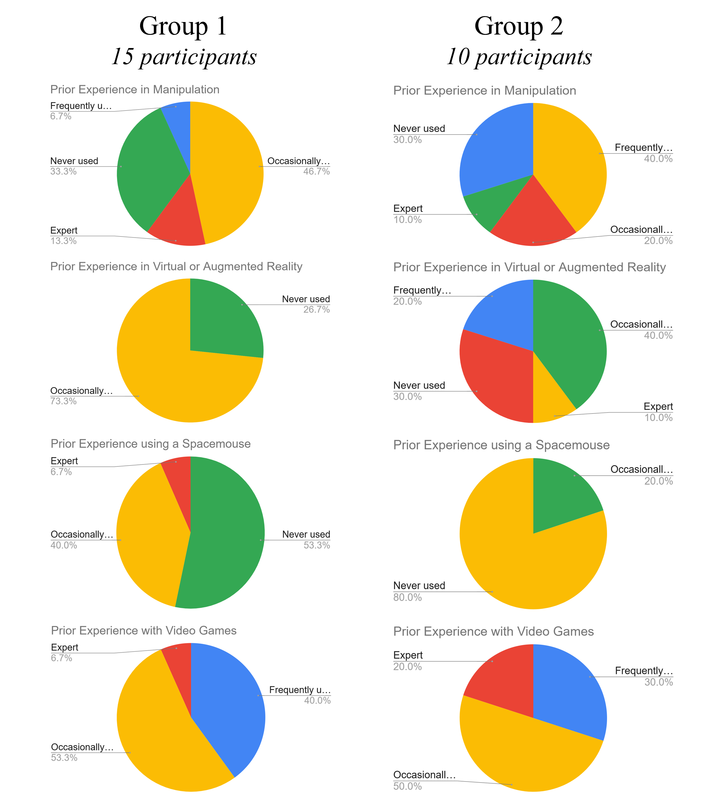
Participant demographics for the 25 participants in our study.
Tasks
Participants completed a subset of six manipulation tasks (4 short-horizon, 2-short horizon) using each of the three robot control interfaces. The tasks included:
Short-horizon tasks:
- POUR: Pouring balls from one bowl to another.
- PEG-in-HOLE: Inserting a peg into a hole.
- RING-on-PEG: Placing a paper towel roll onto a holder.
- BOOKSHELF: Moving a "book" onto a shelf.
Long-horizon tasks:
- REORGANIZE: Moving tabeltop objects to their intended locations.
- TIDY: Placing a mug inside a "cupboard".
Videos of each task are shown below. Short-horizon tasks are shown at 1.5x speed, while long-horizon tasks are shown at 2x speed.
POUR
PEG-in-HOLE
RING-on-PEG
BOOKSHELF
REORGANIZE
TIDY
Results
Time and Success
Although overall trends indicate that participants generally completed tasks more quickly using the SpaceMouse compared to the Mixed Reality Interface, statistically significant differences were observed only for the PEG-in-HOLE and RING-on-PEG tasks. Participants completed tasks faster and more successfully using Kinesthetic Teaching compared to SpaceMouse and Mixed Reality Teleoperation.
Participants using the SpaceMouse experienced substantial difficulty in tasks requiring extensive rotation or navigation through constrained workspaces (RING-on-PEG and BOOKSHELF). While many participants were able to partially complete most tasks, the proportion of partial to complete successes increased markedly as task complexity and the number of required steps grew. Similar patterns were observed for the Mixed Reality interface; however, this method resulted in a greater number of failed trials for most tasks, leading to more overall attempts and generally fewer fully successful completions
These findings highlight the challenges associated with teleoperation methods, particularly for complex tasks, and underscore the need for improved interface designs to enhance user performance and success rates.
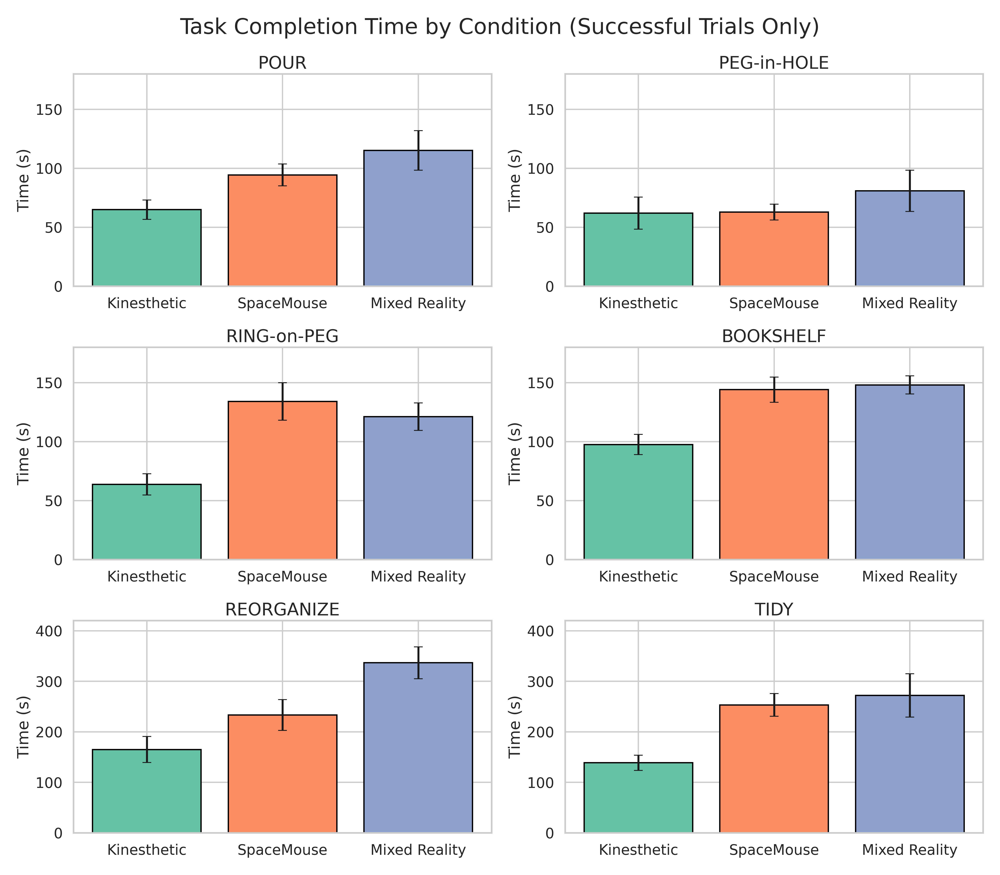
Task completion times across conditions.
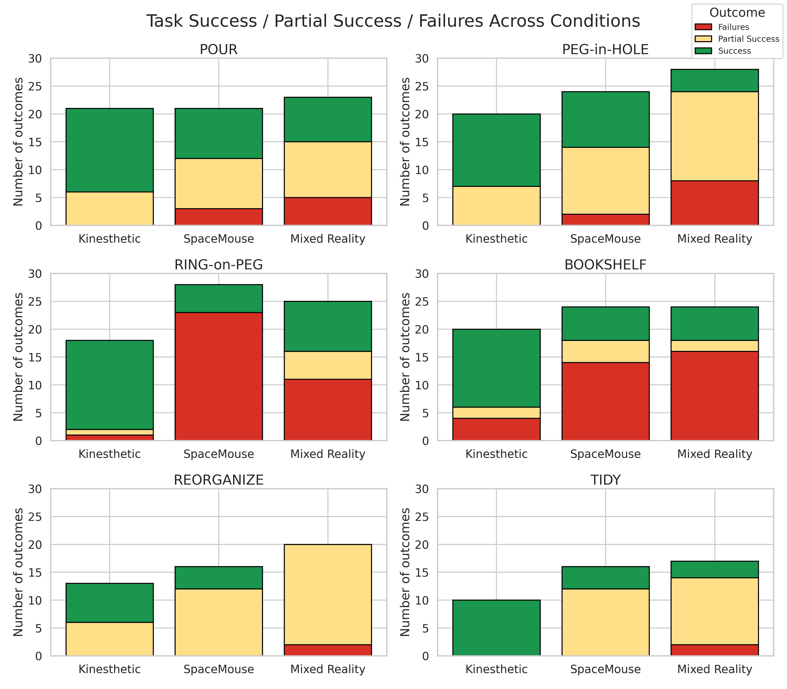
Success counts across conditions.
System Usability
We report the SUS results both by group and across the entire participant population (Figure 9). Interestingly, no statistically significant differences were observed among the three methods for participants in Group 2, although trends suggest that these participants perceived the SpaceMouse as the most usable overall in the two long-horizon tasks. For Group 1, no statistically significant differences emerged between the two teleoperation methods; however, several individual SUS items showed significant differences favoring the Kinesthetic approach over the other two methods.
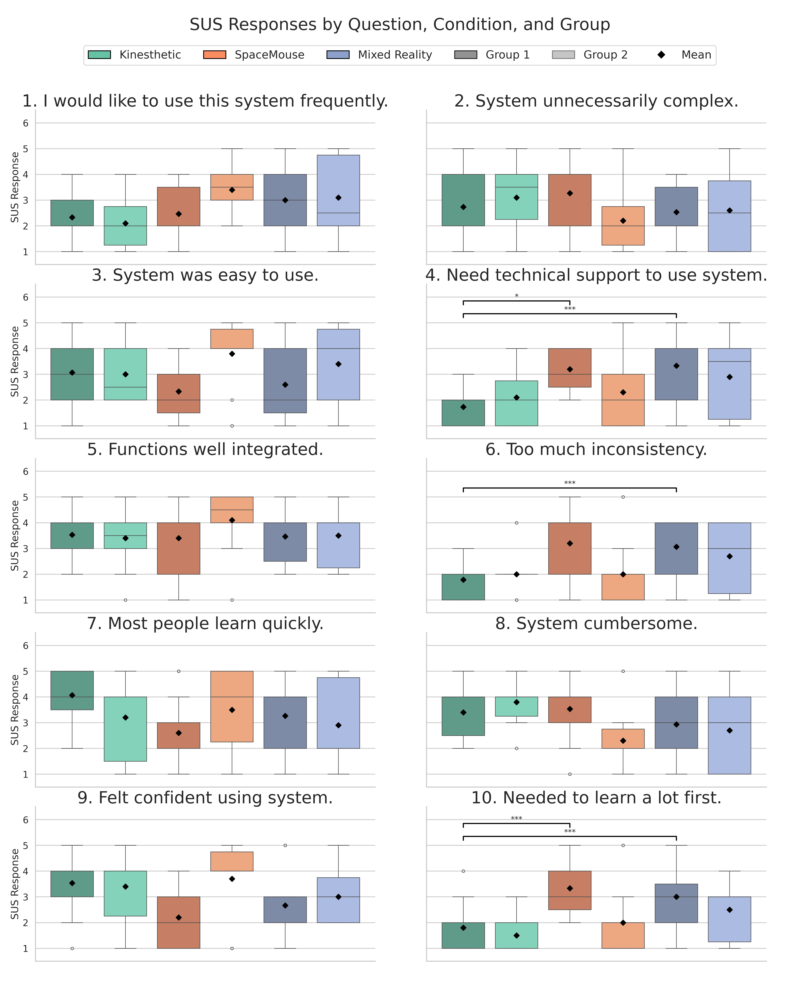
Box plots of SUS scores. Boxes show the 25th–75th percentiles, with the median indicated by a gray line and the mean by a diamond. Whiskers extend to 1.5× the interquartile range, and outliers are shown as unfilled circles. Brackets indicate statistically significant differences, with asterisks marking significance levels: p < 0.05 (*), p < 0.01 (**), and p < 0.001 (***).
Task Load
The NASA TLX results for Group 1, Group 2, and the overall participant population revealed several statistically significant differences, specifically in the Physical Demand, Temporal Demand, Performance, and Frustration subscales. The only measure showing significant differences across all three conditions was Physical Demand, with the SpaceMouse eliciting the lowest physical demand and the Kinesthetic method eliciting the highest physical demand across participants. For the remaining subscales, participants reported comparable workload levels between the two teleoperation methods.
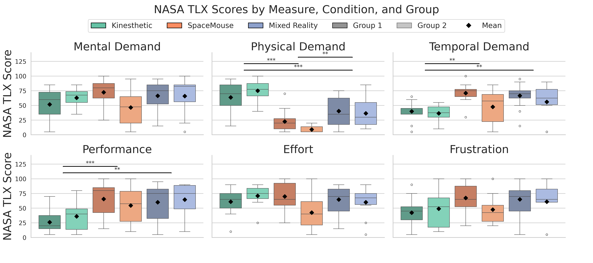
Box plots of NASA TLX results. Lower scores are favorable across all measures. Asterisks denote statistical significance from post-hoc comparisons for Condition.
Additional Results
Time by Experience
As noted previously, the majority of participants in this study were non-experts; however, a subset of participants possessed prior expertise in specific experience categories, enabling limited comparisons between expert and non-expert performance. Below are visualizations of task completion time based on participants' prior experience with robot manipulation, SpaceMouse devices, video games, and VR/AR technologies.
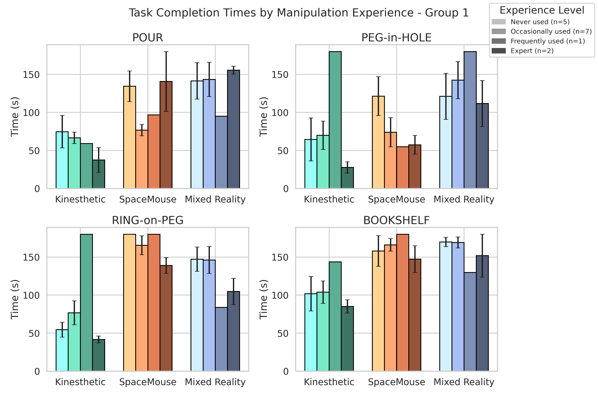
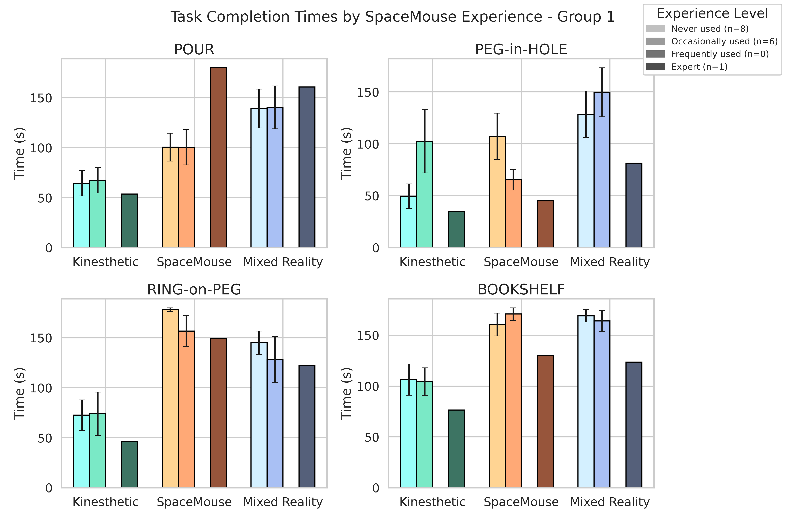

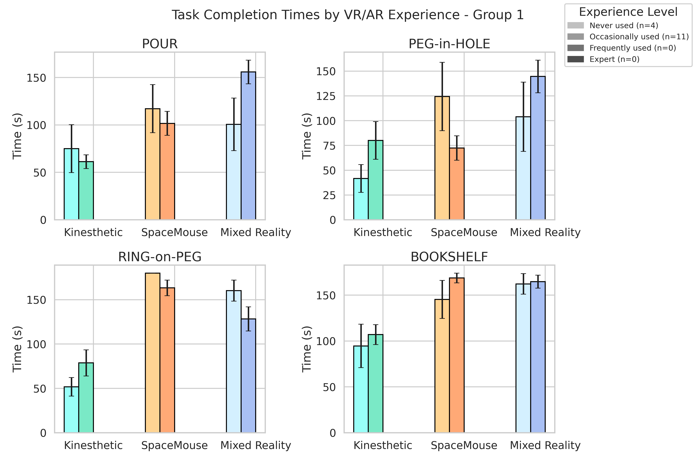
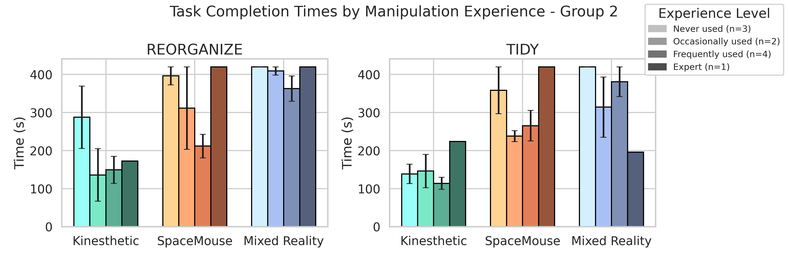
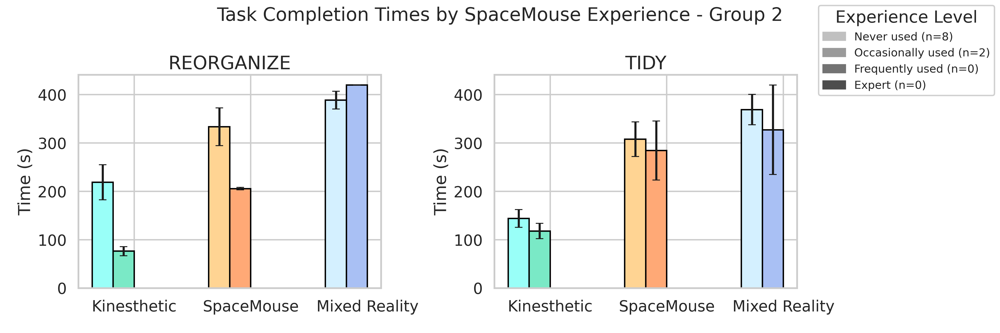

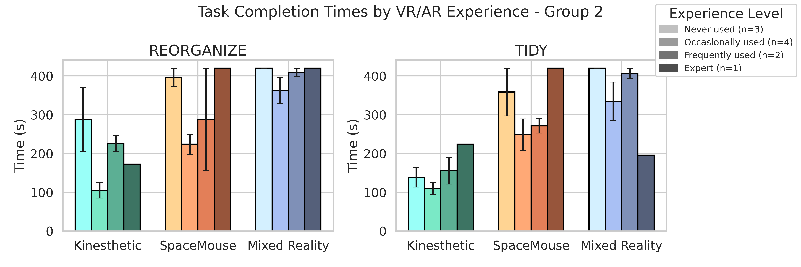
Advantages of Each Control Method (Thematic Analysis)
In the post-experiment questionnaire, participants were asked to describe the advantages of each method relative to the other two. The table below presents a thematic analysis of these responses.
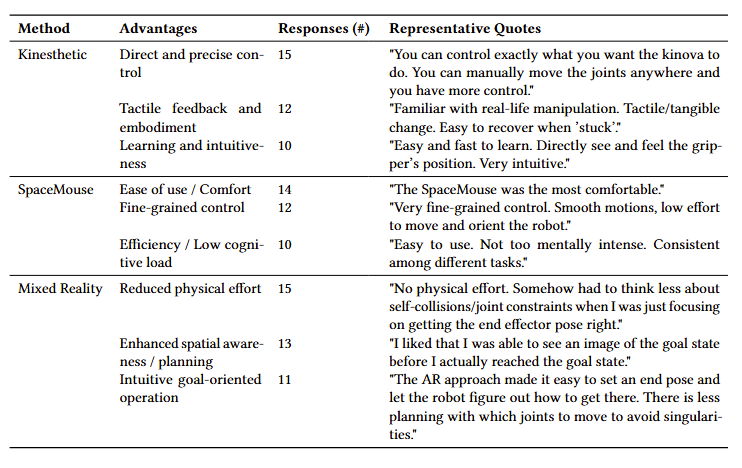
Thematic analysis of participant responses regarding the advantages of each control method.